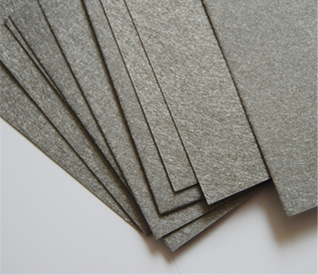
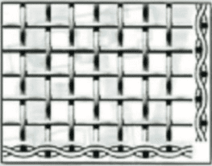
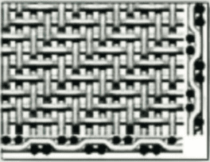
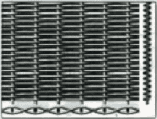
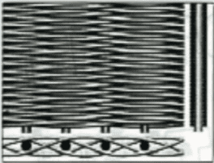

不銹鋼&鈦纖維不織布
由非常細（最細為3UM）的不鏽鋼纖維以三維迷宮方式鋪在一起壓實燒結，在燒結過程中採用的金屬纖維有很高的L/D（長度/直徑）比，因此可以使纖維的無數個接觸點焊在一起從而製成沒有纖維脫落的濾材。為了增強濾材的強度，可以把護網燒結在產品上。（即使在非常高的溫度和壓力下）強度也特別好。為增加使用效果及壽命，也可以把不同直徑組成的金屬纖維膨鬆氈結合在一起壓實燒結，形成立體漸進的非對稱型過濾材料，不同層次攔截不同粒徑的顆粒，以達到過濾效果和最長使用壽命。也可以根據客戶的不同要求燒結成多種規格和形式（包括厚度，過濾性能等）。

多層金屬燒結網（不銹鋼&鈦）
多層燒結網係用多層不鏽鋼網，經特殊疊加壓，以真空燒結而製成的一種新式過濾材料。特殊的燒結工藝能確保金屬絲間的每一個接觸點都能得到燒結，因此製成的多層金屬燒結網具有優良的強度及鋼性；故在使用過程中，網孔不會變形，進而保證了穩定的過濾性能。可焊接折彎切割依需求加工。 此外，多層燒結網具有優良的耐腐蝕及耐磨性能，尤其適用於各種高溫、高壓和高黏度液體的精密過濾。

編織網種類介紹
平織

綾織

平疊織

綾疊織
